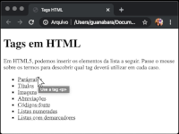

Proposta de desafios
Desafios modulo 01 - 005
Vamos agora criar uma página que
divulgue suas redes sociais. Teremos
uma foto, uma breve descrição e os
links para os seus perfis.
O objetivo aqui não é que você
copie o meu perfil. Você vai criar
a sua própria página e colocar os
seus próprios links.
Se você não tiver canal no YouTube,
Instagram, Twitter ou Facebook não há
problemas! É só não colocar esse item
na lista.
I M P O R T A N T E : Para um
profissional no mundo da programação,
um perfil no LinkedIn e um repositório
no GitHub são ESSENCIAIS! Se você
ainda não tem, reserve um tempinho
para criar o seu.
OBSERVAÇÃO: A imagem do perfil terá
tamanho 150x150 pixels. Você pode
fazer o recorte redondo na imagem
usando qualquer editor de imagem, como
Photoshop (pago) ou o GIMP (gratuito).
Desafios modulo 01 - 006
Desafio das Tags
Agora é a hora de mostrar o que
você está aprendendo de HTML5. Esse
exercício faz uma lista de coisas
que podem ser adicionadas em uma
página. O desafio aqui é arrumar
uma maneira que, ao passar o mouse
sobre um termo, mostre qual é a tag
utilizada para fazer isso. Olha aí
um exemplo:

Na lista acima, coloquei sete
elementos. Porém, no seu exercício
aí você pode adicionar muito mais.
Só não pode fazer menos de sete
itens, senão é preguiça né?